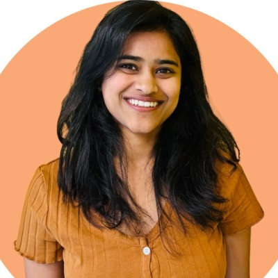
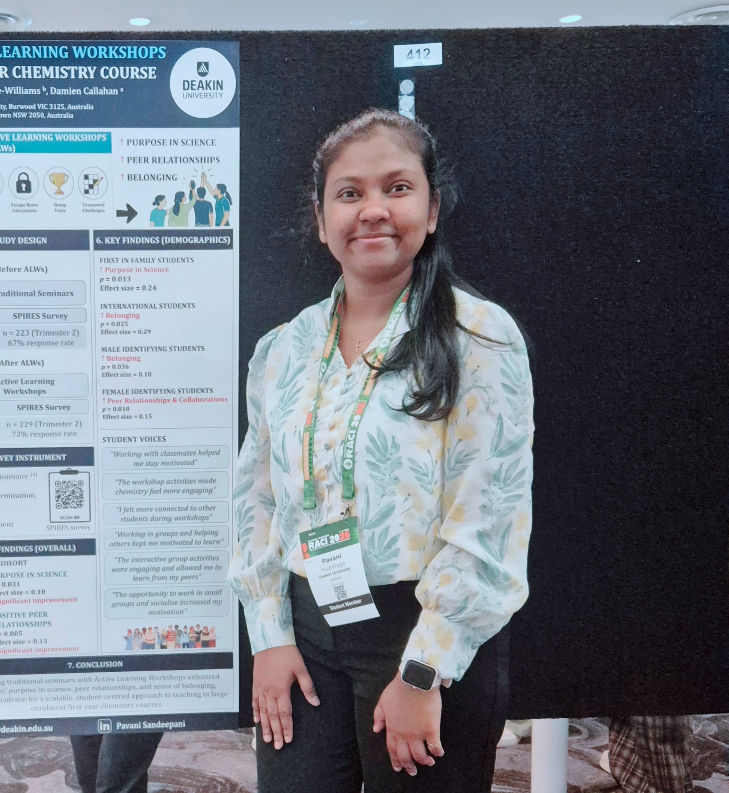
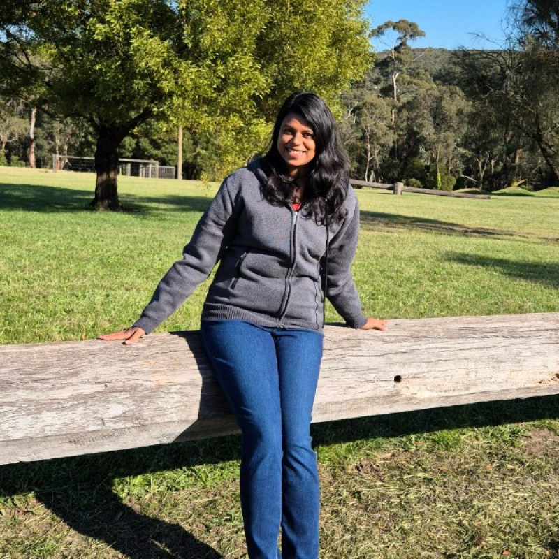
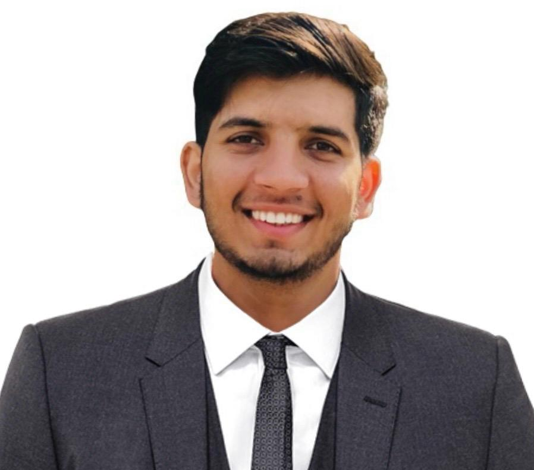
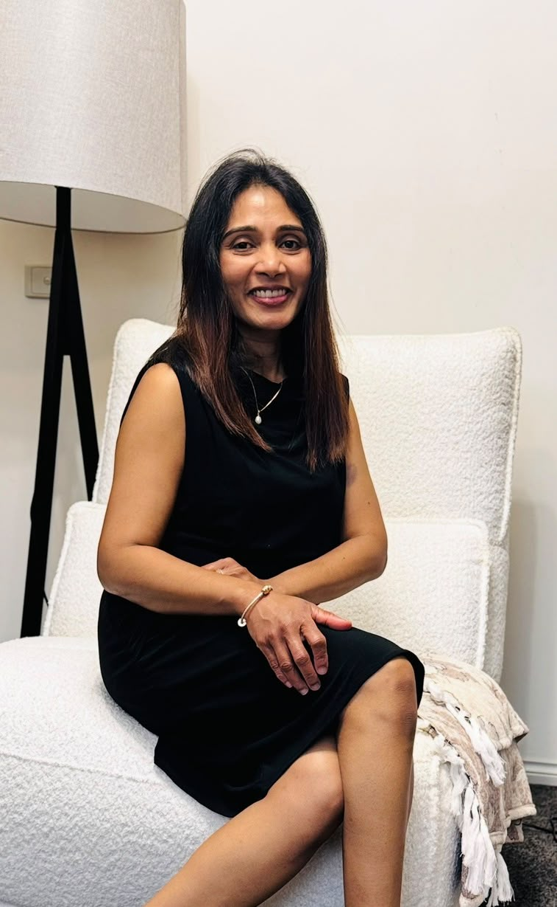

Food & Nutrition
Kumkum CR
Exploring plant bioactives, their bioavailability and their potential benefits for health.
Connect on LinkedInDeakin University · BRIDGE Fellows 2026
Six researchers. Different perspectives. A shared interest in a more sustainable protein future for Australia.
The people behind the pitch
Get to know our research interests and connect with us on LinkedIn.

Food & Nutrition
Exploring plant bioactives, their bioavailability and their potential benefits for health.
Connect on LinkedInSoftware Engineering
Studying the human side of open source software and personalised project recommendations.
Connect on LinkedIn shashiwadana.com
Science Education
Investigating student motivation, belonging and active learning in science education.
Connect on LinkedIn
Sustainable Farming Systems
Researching farming-system resilience and adaptation for more sustainable agri-food futures.
Connect on LinkedIn
Climate & Society
Examining climate-induced migration and how communities experience environmental change.
Connect on LinkedIn
Education
A graduate researcher in Deakin University's School of Education, bringing an education perspective to the team.
Connect on LinkedInOur work · SPANAK opportunity brief
How can Australia turn its protein resources into more valuable, sustainable foods? Our opportunity brief explores plant-based, fermentation-derived and cultivated proteins, maps industry needs, and identifies how Deakin’s research capabilities could help bridge the gap between promising ideas and market-ready products.
Our proposed approach brings together three connected priorities: Discover, Develop and Deliver—with cost, taste, nutrition, safety and consumer trust at the centre.
Explore how pulses and food-processing side-streams could become protein ingredients and fermentation feedstocks, creating higher-value opportunities for growers and processors.
Identify opportunities to use Deakin’s BioFactory and pilot-scale capabilities to improve processing, yield and purity, while addressing the cost of scaling up.
Connect sensory science, nutrition and consumer research to assess taste, digestibility, protein quality and acceptance, building evidence for products people want to choose.
Scope industry pilots and a proposed assessment of Eden Brew’s protein, covering digestibility, protein quality, formulation and consumer trust.
Pursue co-funded trials to improve yield, purity and cost, and explore side-stream feedstocks with Australian Plant Proteins.
Work towards a coordinated hub linking existing facilities, research expertise, industry partners and investors.
Based on our BRIDGE Fellows 2026 opportunity brief. The pathway and named collaborations are proposals for exploration.